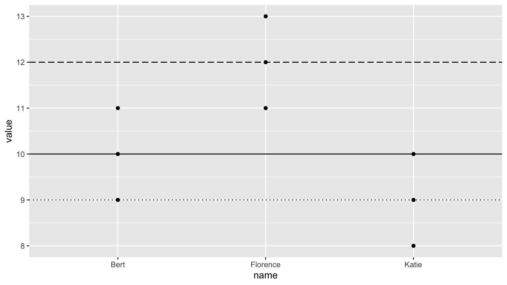

SDS/MTH 220: Intro to Probability and Statistics
Sec01: Albert Y. Kim & David Rockoff. Sec02: Katherine Kinnaird & Will Hopper
Last updated on 2020-03-02
Schedule
Lec 18: Fri 3/6
Announcements
Recap
Chalk Talk
Lec 17: Wed 3/4
Announcements
Recap
Chalk Talk
Lec 16: Mon 3/2
Announcements
- Badge challenge 1 is still going on. The honor code prohibits you from discussing it until the time window closes.
Chalk Talk
- Model selection using visualizations. In particular, choosing between the interaction and parallel slopes models by comparing
- Figure 6.7 for UT Austin data
- Figure 6.8 for Massachusetts high school data
- Model selection using \(R^2\). In particular, choosing between the interaction and parallel slopes models by comparing \(R^2\) values
Lec 15: Fri 2/28
Announcements
- Project
- Go over general feedback for all groups
- Discuss next project phase: project proposal
- Cover page of Badge Challenge I is now posted
Recap
- Interaction models are one type of model for \(x_1\) numerical and \(x_2\) categorical (with \(k\) levels/groups). They
- Allow for different intercepts for all \(k\) groups
- Allow for different slopes for all \(k\)
Chalk talk
- Parallel slopes models are another type of model for \(x_1\) numerical and \(x_2\) categorical (with \(k\) levels/groups). They
- Allow for different intercepts for all \(k\) groups of the categorical variable \(x_2\)
- Restrict all \(k\) groups to have a common slope
- On Monday, we’ll explore model selection
Lec 14: Wed 2/26
Announcements
- Project: We’re going over first phase submissions as we speak. We’ll have first round of feedback and information for the next project phase on Friday.
- Badge Challenge 1:
- Remember that you only have to do as many questions as you are ready for. If a question has multiple parts, you must attempt all parts to earn above X (cannot be assessed).
- In order to ensure fairness, all instructors, lab instructors, and Spinelli tutors will not answer questions during the badge challenge time window.
- We’ll post the cover page of the badge challenge on the webpage later today.
- Minh Ly, the Associate Director for Assessment of Smith Office of Institutional Research (IR), will be giving a talk this tonight at 7PM in Seelye 107:
Recap
- Indicator function from ModernDive 5.2.2 on regression with a categorical variable using
gapminderdata. What does \(\mathbb{1}_{\text{Amer}}(x)\) do?
Chalk talk
Today’s outline:
- Chalk talk part 1: Multiple regression for \(y\) as a function of \(x_1\) and \(x_2\)
- You will then read ModernDive from the beginning of Chapter 6 to the end of 6.1.1. Write down your interpretation of Figure 6.1.
- Chalk talk part 2: Tying together
- Figure 6.1: Visualization of interaction model
- Table 6.2: Regression table for interaction model
- Table 6.4: Intercepts and slopes of regression line for both genders (recorded as binary at time of study in 2005).
- You will then read ModernDive 6.1.2 on interaction models
Lec 13: Mon 2/24
Announcements
- SDS talk this week on balancing between “having useful data” and “maintinaing sufficient privacy protection”:
- What: “Generating Synthetic Family Income for the Consumer Expenditure Surveys”
- Who: Prof. Jingchen (Monika) Hu, Vassar College
- When: Thursday Feb 27, 5pm
- Where: McConnell Hall 103

Today
- Recap exercise on common R and RStudio coding issues (print-out given in class available here)
- Discussion on Badge Challenge 1
- Class time for projects
Lec 12: Fri 2/21
Announcements
NA
Recap
Recall the categ_regression_ex data frame from from Lec11. Note that the explanatory variable \(x\) = name is now categorical with 3 levels: Bert, Florence, Katie.
You then plotted the points. Let’s also add three lines:
- A solid line for Bert’s “baseline” mean (“Bert” is the baseline because it comes first alphanumerically)
- A dashed line for Florence’s mean, which is offset from Bert’s mean by 12 - 10 = +2
- A dotted line for Katie’s mean, which is offset from Bert’s mean by 9 - 10 = -1

Shout out to Dr. Jenny Smetzer for this example.
Chalk talk
Now let’s obtain the regression table using the get_regression_table() function in the moderndive package. Recall this is done in two steps:
# Step 1: Fit regression model
model_ex <- lm(value ~ name, data = categ_regression_ex)
# Step 2: Get regression table
get_regression_table(model_ex)Let’s now get the fitted values and residuals using the get_regression_points() function on model_ex (where our model is saved):
Lec 11: Wed 2/19
Announcements
NA
Recap
- What are boxplots good for?
In-class exericse
Consider the following 9 points saved in a data frame called categ_regression_ex where we have
- A numerical outcome variable \(y\) =
value - An categorical explanatory variable \(x\) =
namewith 3 levels: Bert, Florence, Katie.
library(ggplot2)
library(dplyr)
categ_regression_ex <- tibble(
name = c("Bert","Bert","Bert","Florence","Florence","Florence","Katie","Katie","Katie"),
value = c(9,10,11,11,12,13,8,9,10)
)
categ_regression_exIn groups: copy the above code and create a scatterplot with
value(numerical) on the y-axisname(categorical) on the x-axis
Note this is slightly different that the scatterplots we’ve seen until now where the x variable was always numerical.
Solution:

Lec 10: Mon 2/17
Announcements
Recap
Chalk talk
- Correlation is not necessarily causation:
- Spurious correlations
- What are X = treatment, Y = response, and Z = confounding variables?
- What are causal graphs?
- Simple example: Does “X = drinking gatorade/ginger ale” cause “Y = feel nauseous”?
- Famous example: UC Berkeley gender bias. Does “X = (binary) gender” cause “Y = decreased chance of admission to UC Berkeley in 1973”?
- Recall
simple_regression_exfrom Lec09.
- Draw the 3 points and the “best-fitting” regression line in blue.
- Draw the 3 fitted values \(\widehat{y}\) using the equation for the regression line \(\widehat{y} = b_0 + b_1\cdot x\)
- Draw the 3 residuals \(y - \widehat{y}\)
- Compute the sum of squared residuals for this line.
- Draw another arbitrarily chosen line with equation \(\widehat{y} = 2 - 1\cdot x\) in green.
- Compute the sum of squared residuals for this line and compare to previous
Lec 09: Fri 2/14
Announcements
- If you need a group for the project, please fill out the Google Form on Moodle ASAP! We’re going to start making groups this weekend.
Recap
tidyversepackage is an umbrella package that loadsggplot2,dplyr,readr, and other useful packages for data science all at once. For more info, visit tidyverse.org/
Chalk talk
Consider the following 3 points saved in a data frame calledsimple_regression_ex.
Let’s plot them along with the regression line.
Now let’s obtain the regression table. This is done in two steps:
# Step 1: Fit regression model
model_ex <- lm(y ~ x, data = simple_regression_ex)
# Step 2: Get regression table
get_regression_table(model_ex)- Connection between regression line and values in
estimatecolumn of regression table. - Interpretation of:
- Fitted intercept \(b_0\): mathematical versus practical interpretations.
- Fitted slope \(b_1\): precise language matters!
- Obtaining a regression table takes two steps:
- Create/fit the model using
lm()and formula interfacey ~ x - Ask for the table using
get_regression_table()function frommoderndivepackage
- Create/fit the model using
Lec 08: Wed 2/12
Announcements
- First phase of project unveiled: Project data (due Mon 2/24 at 11pm)
- We move to Chapters 5 & 6 on data modeling with regressions
- Keyboard shortcut for
%>%:- macOS: Command + Shift + M
- Windows: Contrl + Shift + M
Recap
Our data wrangling toolbox, which you will use for your project and for the rest of this course:
filter()rowssummarize()rows using a summary functiongroup_by()to group rows by the values of another variablemutate()new variables/columnsarrange()rows in ascending (default) ordesc()ending orderselect()variables/columns- For more verbs, see
dplyrcheatsheet: Go to RStudio menu bar -> Help -> Cheatsheets -> Data Transformation withdplyr.
Chalk talk
- Correlation coefficient:
- Definition: It is a summary statistic quantifying the strength of linear assocation.
- Draw examples
- In ModernDive 5.4.1: Play “guessing the correlation game”
- Two types of variables: outcome/response \(y\) and explanatory/predictor variables \(x\). For the following pairs of variables, what would be \(y\) and what would be \(x\) in a model?
- Temperature in fahrenheit vs temperature in celsius
- Job salary and number of years of education
- Lung cancer and smoking
- Coffee and sleep
Lec 07: Mon 2/10
Announcements
- Today’s lecture is last of pink topics in calendar (data science). We start blue topics (regression) on Wednesday.
Recap
Chalk talk
- Using same fruit basket example from chalk talk in Lec 05:
mutate()new variables from existing variables: price in cents- Reorder i.e.
arrange()rows of a data frame in alpha-numerical order of a variable: in order of price. Default is ascending order, need to specifydesc() select()variables/columns. Analogous tofilter()rows.
Lec 06: Fri 2/7
Announcements
NA
Recap
Chalk talk
- Using same fruit basket example from chalk talk in Lec 05:
- “Summary functions” are many-to-one functions to compute “summary statistics,” like
mean()&median() - Using summary functions to then
summarize()rows - Setting “group meta-data” of a data frame using
group_by(), thensummarize()rows. In other words,group_by()by itself does not change the “data”, rather only the “meta-data”
- “Summary functions” are many-to-one functions to compute “summary statistics,” like
- Normal distribution: One summary statistic of spread, standard deviation
sd(), has a particular interpretation when distribution of a numerical variable follows a normal AKA bell curve
Lec 05: Wed 2/5
Announcements
- Posted single calendar of all instructor and lab instructor office hours on Moodle.
- Posted badge challenges
- Managing Slack notifications:
- We suggest but don’t require installing Desktop App.
- If not, at the very least, keep email notifications on.
- How to approach in-class readings.
Recap
First, let’s compare the boxplot you created in Lec04 with the original points. See how they align.
Second, let’s compare two visualizations of the distribution of the numerical variable temperature split by month:
- Faceted histogram in ModernDive Figure 2.13
- Side-by-side boxplot in ModernDive Figure 2.18
Which do you prefer?
Third, the idea of “assigning AKA saving something in R” using the arrow <-. Ex: x <- 5. You do this so you can access it again later, either to
- View its contents: Type
xin the console or RMarkdown. - Modify it’s contents: Type
x <- x + 1or RMarkdown. What is now saved inx?
Chalk talk
We now start data wrangling! For our chalk talks, we’ll use the following “fruit basket” example:
Topics:
- Define the “pipe operator”
%>%, pronounced then - Logical AKA boolean operators in computer programming
filter()rows that match a criteria
Lec 04: Mon 2/3
Announcements
NA
Chalk talk
Boxplots! Powerful, but tricky!
Say we want to study the distribution of the following 12 values which are pre-sorted:
1, 3, 5, 6, 7, 8, 9, 12, 13, 14, 15, 30
They have the following summary statistics. A summary statistic is a single numerical value summarizing many values. Examples include the immediately obvious mean AKA average and median. Other less immediately obvious examples include:
- Quartiles (1st, 2nd, and 3rd) that cut up the data into 4 parts, each containing roughly one quarter = 25% of the data
- Minimum & maximum
- Interquartile-range (IQR): the distance between the 3rd and 1st quartiles
| Min. | 1st Quartile | Median = 2nd Quartile | 3rd Quartile | Max. | IQR |
|---|---|---|---|---|---|
| 1 | 5.5 | 8.5 | 13.5 | 30 | 8 = 13.5 - 5.5 |
Steps to constructing a boxplot:
- Draw box
- Throw out whiskers 1.5 x IQR from either end of box
- Mark outliers
- Pull in the ends of both whiskers towards the box until an observed value is hit.
Lec 03: Fri 1/31
Announcements
Chalk talk
- Draw histogram by hand, emphasizing that bins correspond to intervals (right-edge inclusive).
- Adjust the binning structure of the previous hand-drawn histogram two ways:
- Adjusting the binwidth
- Adjusting the number of bins
- Facets split one graphic by the values of another variable (that does not have too many unique values).
Lec 02: Wed 1/29
Announcements
- Fatima Keita is interested in organizing a group for students of color within SDS, called SDS coalition of color (SDSCC). She has also put together a survey to gather students of color’s experiences within SDS courses and the program more generally. If you identify as a student of color and you’ve taken at least one SDS course, please take a moment to complete Fatima’s SDSCC Preliminary Interest Survey. The idea is that these experiences would then be anonymously shared with the SDS faculty in hopes that we can work to improve inclusivity within the program and curriculum. If you are interested in joining, please email Fatima directly.
- Show example
#questionson Slack. - In-class demo of Gradescope.
- This week’s problem set has three elements
- Submit PDF on Gradescope with questions tagged
- Fill out Intro Survey Google Form
- Submit on Moodle reflection piece which builds off in-class reflection exercise.
Chalk Talk
- Draw scatterplot by hand
- Define of Grammar of Graphics
- Write example
ggplot()code - Explain what jittering does to graphic and what it does not do to original data
Lec 01: Mon 1/27
Announcements
- Introductions
- If you’re having registration issues:
- Please keep in mind that SDS201 is a course that also satisfies the intro stats pre-requisite for many majors, including PSY, GOV, BIO, NSC, ENV, and SDS. Please consider that option as it currently has lots of room.
- If you are not registered for this course, fill out the waitlist Google Form before Thursday 5pm.
- We will start informing students and signing green slips on Friday afternoon.
- If you have previously put your name on the above waitlist Google Form but no longer need a spot, we would very much appreciate a message letting us know. This will help us and your peers a lot.
- Syllabus
- Honor code discussions
- Reflection exercise
Lecture
Here is the typical lecture flow:
- Start with a 10-15 minute “chalk talk”. We do this to motivate the day’s topics and warn you about potential pitfalls in understanding
- Followed by in-class ModernDive readings listed in the above schedule. We do this so you can read at your own pace, talk to your peers, and ask us questions. While you do not need to submit your “Learning Check” answers, we highly recommend you write them down and verify your answers in Appendix D of ModernDive.
Today’s topics:
- Introduction to Slack: A brief demo
- Introduction to R, RStudio, and R packages: ModernDive readings